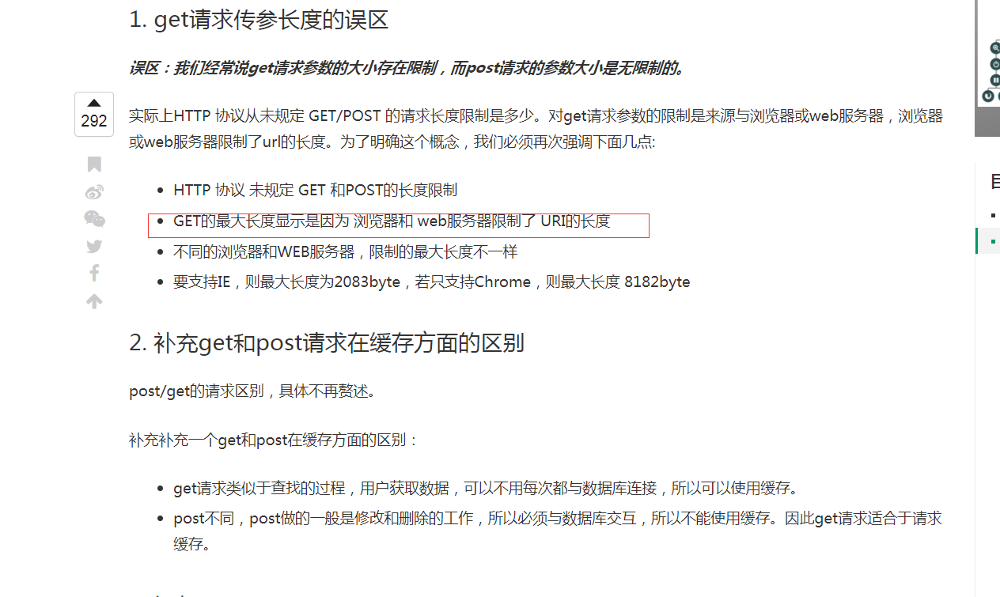

FORM中的get post方法区别Form中的get和post方法，在数据传输过程中分别对应了HTTP协议中的GET和POST方法。二者主要区别如下：
2、 Get将表单中数据的按照variable=value的形式，添加到action所指向的URL后面，并且两者使用“?”连接，而各个变量之间使用 “&”连接；Post是将表单中的数据放在form的数据体中，按照变量和值相对应的方式，传递到action所指向URL。
3、 Get是不安全的，因为在传输过程，数据被放在请求的URL中，而如今现有的很多服务器、代理服务器或者用户代理都会将请求URL记录到日志文件中，然后 放在某个地方，这样就可能会有一些隐私的信息被第三方看到。另外，用户也可以在浏览器上直接看到提交的数据，一些系统内部消息将会一同显示在用户面前。 Post的所有操作对用户来说都是不可见的。
4、Get传输的数据量小，这主要是因为受URL长度限制 (ie 2000 谷歌 8000) ；而Post可以传输大量的数据，所以在上传文件只能使用Post（当然还有一个原因，将在后面的提到）。
6、Get是Form的默认方法。
_files/3cac7c1eed7b111f61a1347e0ceab9c3.png)